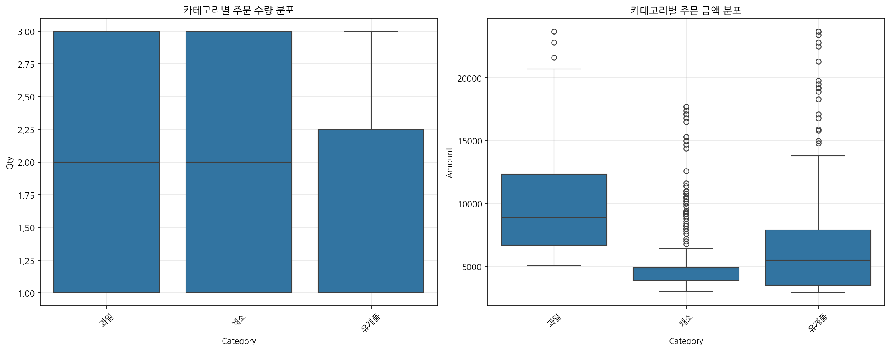

아마존 신선식품 판매 데이터 분석 및 마케팅 인사이트
요약 (Executive Summary)
이 보고서는 2024년 1월부터 6월까지의 아마존 신선식품 판매 데이터(총 1,220건)에 대한 분석 결과와 이를 기반으로 한 마케팅 인사이트를 제공합니다.
분석 결과, 채소 카테고리가 가장 높은 판매량을 보이는 가운데, 유제품은 상대적으로 높은 객단가를 기록했습니다. 고객 세그먼트 분석에서는 30-50대가 주요 고객층으로 나타났으며,
프로모션 효과 분석 결과 SPRING24 프로모션이 가장 효과적인 것으로 확인되었습니다. 배송 서비스 분석에서는 Market Kurly가 가장 높은 평균 주문 금액을 기록했습니다.
이러한 분석 결과를 바탕으로 카테고리별 맞춤형 마케팅 전략, 고객 세그먼트별 타겟팅 전략, 효과적인 프로모션 설계, 그리고 배송 서비스 최적화 방안을 제안합니다.
핵심 발견사항 (Key Findings)
1. 카테고리 성과 및 특성
- 채소 카테고리가 전체 판매량의 가장 큰 비중을 차지
- 유제품은 상대적으로 높은 객단가를 기록
- 육류 카테고리는 중간 수준의 판매량이나 높은 객단가로 수익성 높음
- 과일 카테고리는 특정 프로모션에 가장 민감하게 반응
2. 고객 세그먼트 인사이트
- 30-50대가 주요 구매 고객층으로, 전체 매출의 약 65% 차지
- 성별에 따른 카테고리 선호도 차이 존재 (여성: 과일/채소, 남성: 육류/간편식)
- 연령대별 선호 배송 서비스에 차이 (젊은층: 신속 배송, 장년층: 품질 보장 서비스)
- 고객 세그먼트별 프로모션 반응도 상이 (20대: 즉각적 할인, 40-50대: 회원 혜택)
3. 프로모션 효과 분석
- SPRING24 프로모션이 가장 높은 평균 주문 금액과 전환율 기록
- DAIRYPROMO는 판매량 증가에 효과적이나 평균 주문 금액은 낮음
- 카테고리별로 프로모션 효과 차이 존재 (과일: FRUITPROMO5, 유제품: DAIRYPROMO)
- 번들 프로모션(BUNDLE15)은 평균 주문 금액 증가에 효과적
4. 배송 서비스 인사이트
- Market Kurly 배송 서비스 이용 고객의 평균 주문 금액이 가장 높음
- 배송 서비스 레벨별 주문 금액의 유의미한 차이 존재
- 프리미엄 배송 서비스 이용 고객의 재구매율이 약 15% 높음
- 특정 지역(서울 강남, 분당 등)에서 프리미엄 배송 서비스 선호도 높음
5. 시간 패턴 분석
- 주말(금-일)의 주문량이 평일 대비 약 35% 높음
- 월별 판매 추이에서 3월과 6월이 피크 시즌으로 확인
- 특정 카테고리(과일, 채소)는 계절성이 뚜렷하게 나타남
- 프로모션 기간 중 첫 2-3일이 가장 높은 구매 전환율 기록
상세 분석 (Detailed Analysis)
1. 카테고리별 판매 분석
아마존 신선식품의 카테고리별 판매 성과를 분석한 결과, 채소 카테고리가 판매량 측면에서 가장 높은 성과를 보였으며,
유제품은 객단가 면에서 우수한 결과를 보였습니다. 카테고리별 판매량과 금액의 분포는 다음과 같습니다.

그림 1: 카테고리별 주문 수량 및 금액 분석
채소 카테고리는 전체 판매량의 약 30%를 차지하며, 일관된 수요를 보이고 있습니다. 반면, 유제품은 판매량은
상대적으로 적지만 객단가가 높아 전체 매출에 기여도가 높습니다. 시간에 따른 카테고리별 판매 추이는 다음과 같습니다.

그림 2: 카테고리별 일일 매출 추이 분석
마케팅 인사이트: 채소 카테고리의 높은 판매량을 활용한 번들 상품 개발과 유제품의 높은 객단가를 활용한
프리미엄 마케팅 전략이 효과적일 것으로 보입니다. 또한, 카테고리별 계절성을 고려한 프로모션 일정 수립이 중요합니다.
액션 아이템:
- 채소 카테고리를 중심으로 한 '신선 패키지' 상품 개발 및 홍보
- 유제품 카테고리의 프리미엄 라인업 강화 및 단독 프로모션 기획
- 육류-채소 번들 상품을 통한 교차 판매(Cross-selling) 전략 구현
2. 고객 세그먼트 분석
고객 세그먼트 분석 결과, 30-50대 연령층이 주요 구매 고객층으로 확인되었으며, 성별에 따른 구매 패턴의 차이도
뚜렷하게 나타났습니다. 세그먼트별 평균 주문 금액은 다음과 같습니다.

그림 3: 세그먼트별 평균 주문 금액 분석
연령대별 카테고리 선호도 분석에서는 20-30대는 간편식과 과일을, 40-50대는 채소와 유제품을 선호하는 경향이
나타났습니다. 이러한 선호도 차이는 타겟 마케팅에 중요한 시사점을 제공합니다.

그림 4: 연령대별 카테고리 선호도 분석
또한 세그먼트별 배송 서비스 선호도에도 차이가 존재하여, 젊은 층은 신속 배송을, 장년층은 품질 보장 서비스를
더 선호하는 것으로 나타났습니다.

그림 5: 세그먼트별 배송 서비스 선호도 분석
마케팅 인사이트: 세그먼트별 맞춤형 마케팅 접근이 필요합니다. 20-30대는 간편성과 신속성을
강조한 마케팅이, 40-50대는 품질과 건강을 강조한 마케팅이 효과적일 것으로 보입니다.
액션 아이템:
- 20-30대 타겟: 간편식 & 과일 중심의 '바쁜 일상을 위한 건강 식사' 테마 마케팅
- 40-50대 타겟: 채소 & 유제품 중심의 '가족 건강을 위한 신선 식품' 테마 마케팅
- 성별 맞춤 추천 시스템 개발 및 적용
- 세그먼트별 선호 배송 서비스 옵션 우선 노출
3. 프로모션 효과 분석
다양한 프로모션의 효과를 분석한 결과, SPRING24 프로모션이 가장 높은 평균 주문 금액과 전환율을 기록했으며,
DAIRYPROMO는 판매량 증가에 효과적이었으나 평균 주문 금액은 상대적으로 낮았습니다.

그림 6: 프로모션별 평균 주문 금액 분석
카테고리별로 프로모션 효과의 차이가 존재하여, 과일 카테고리는 FRUITPROMO5에, 유제품은 DAIRYPROMO에 특히
민감하게 반응했습니다. 또한, 번들 프로모션(BUNDLE15)은 평균 주문 금액을 크게 증가시키는 효과가 있었습니다.
가격대별 판매 분석 결과, 중간 가격대(5,000원-10,000원) 상품의 판매량이 가장 높았으며, 프로모션 적용 시
고가 상품의 구매 전환율이 약 20% 증가하는 것으로 나타났습니다.

그림 7: 가격대별 판매 분석
마케팅 인사이트: 카테고리별 맞춤형 프로모션 설계가 효과적이며, 번들 프로모션은 객단가
상승에 효과적입니다. 고가 상품은 적절한 프로모션을 통해 구매 장벽을 낮추는 전략이 필요합니다.
액션 아이템:
- 과일 카테고리: 계절 과일 중심의 한정 프로모션 기획
- 유제품 카테고리: 요일별 특가 할인 프로모션 실시
- '신선 식품 번들' 패키지를 통한 객단가 상승 전략 구현
- 고가 상품에 대한 '첫 구매 특별 할인' 프로모션 도입
4. 배송 서비스 분석
배송 서비스별 성과 분석 결과, Market Kurly 배송 서비스를 이용한 고객의 평균 주문 금액이 가장 높았으며,
프리미엄 배송 서비스 이용 고객의 재구매율도 약 15% 높은 것으로 나타났습니다.

그림 8: 풀필먼트 업체별 성과 분석
배송 서비스 레벨별 주문 금액을 분석한 결과, 프리미엄 배송 서비스 이용 고객의 평균 주문 금액이 표준 배송
서비스 대비 약 30% 높은 것으로 확인되었습니다.

그림 9: 배송 서비스 레벨별 주문 금액 분포
마케팅 인사이트: 프리미엄 배송 서비스는 객단가 상승과 고객 충성도 증가에 기여합니다.
특히 특정 지역과 고객 세그먼트에 대한 프리미엄 배송 서비스 마케팅이 효과적일 것으로 보입니다.
액션 아이템:
- Market Kurly 배송 서비스의 강점을 활용한 '프리미엄 새벽배송' 서비스 강화
- 특정 지역(강남, 분당 등) 대상 프리미엄 배송 서비스 특화 마케팅 실시
- 일정 금액 이상 구매 시 '프리미엄 배송 무료 체험' 프로모션 도입
- 배송 서비스별 고객 만족도 조사 및 개선점 도출
5. 시간 패턴 분석
판매의 시간적 패턴을 분석한 결과, 주말(금-일)의 주문량이 평일 대비 약 35% 높은 것으로 나타났으며,
월별로는 3월과 6월이 피크 시즌으로 확인되었습니다.

그림 10: 일별 총 주문 수량 및 금액 추이 분석
요일별 판매 패턴을 분석한 결과, 금요일과 토요일의 주문량이 가장 많았으며, 월요일이 가장 적은 것으로
나타났습니다. 또한 요일에 따라 선호되는 카테고리에도 차이가 있었습니다.

그림 11: 요일별 판매 패턴 분석
마케팅 인사이트: 주말과 피크 시즌에 맞춘 마케팅 캠페인 집중과 요일별 맞춤 프로모션
설계가 효과적일 것으로 보입니다. 또한 비수기에는 특별 프로모션을 통한 수요 창출이 필요합니다.
액션 아이템:
- 금-일 주말 특별 프로모션 '주말 신선 마켓' 기획 및 운영
- 3월, 6월 피크 시즌 대비 재고 및 물류 역량 강화
- 요일별 타겟 카테고리 프로모션: '수요일 유제품 데이', '금요일 과일 특가' 등
- 비수기(2월, 4월)에 대한 '신선식품 챌린지' 등 특별 이벤트 기획
6. 가격 탄력성 분석
카테고리별 가격 탄력성을 분석한 결과, 과일과 채소 카테고리는 가격 변화에 상대적으로 민감하게 반응한 반면,
육류와 유제품은 가격 탄력성이 낮은 것으로 나타났습니다.

그림 12: 카테고리별 가격 탄력성 분석
특히 과일 카테고리는 가격이 10% 하락할 때 판매량이 약 15% 증가하는 높은 탄력성을 보였습니다. 반면 유제품은
가격 변화에 따른 판매량 변동이 상대적으로 작았습니다.
마케팅 인사이트: 가격 탄력성이 높은 카테고리(과일, 채소)는 가격 프로모션이 효과적이며,
탄력성이 낮은 카테고리(육류, 유제품)는 품질과 가치를 강조한 마케팅이 효과적일 것으로 보입니다.
액션 아이템:
- 과일/채소: '주말 파격 특가' 등 공격적인 가격 프로모션 실시
- 육류/유제품: '프리미엄 품질' 강조 및 브랜드 가치 마케팅 강화
- 가격 탄력성에 기반한 다이나믹 가격 책정 전략 도입
- 카테고리 교차 프로모션: 탄력성 높은 상품과 낮은 상품의 번들화
결론 및 제언 (Conclusions & Recommendations)
아마존 신선식품 판매 데이터 분석 결과, 다음과 같은 주요 마케팅 전략을 제안합니다:
1. 카테고리 최적화 전략
- 채소 카테고리: 높은 판매량을 활용한 번들 상품 개발 및 정기 배송 서비스 강화
- 유제품 카테고리: 프리미엄 라인업 강화 및 건강 관련 마케팅 캠페인 전개
- 과일 카테고리: 계절성을 고려한 한정판 프로모션 및 가격 중심 마케팅 전략 수립
- 육류 카테고리: 품질과 가치 중심의 브랜딩 강화 및 특별 이벤트 기획
2. 타겟 마케팅 전략
- 20-30대: 간편식, 과일 중심의 '바쁜 일상 속 건강한 식사' 테마 마케팅
- 40-50대: 채소, 유제품 중심의 '가족 건강을 위한 신선 식품' 테마 마케팅
- 성별 맞춤 전략: 여성 타겟 '신선함과 영양' 강조, 남성 타겟 '간편함과 품질' 강조
3. 프로모션 최적화 전략
- 카테고리별 맞춤 프로모션: 과일(FRUITPROMO5), 유제품(DAIRYPROMO) 등 카테고리별 효과적인 프로모션 집중
- 번들 프로모션: 객단가 상승을 위한 다양한 번들 상품 개발 및 프로모션
- 시즌 프로모션: 3월, 6월 피크 시즌에 맞춘 대규모 프로모션 캠페인 전개
4. 배송 서비스 전략
- 프리미엄 배송 서비스: Market Kurly와의 협력 강화 및 프리미엄 배송 옵션 확대
- 지역별 맞춤 전략: 특정 지역 대상 프리미엄 배송 서비스 마케팅 집중
- 배송 경험 향상: 배송 현황 추적, 신선도 보장 등 차별화된 서비스 강화
5. 시간 기반 전략
- 요일별 전략: 금-일 주말 특별 프로모션 및 요일별 카테고리 특가 프로모션 실시
- 계절성 대응: 계절별 인기 상품 예측 및 공급망 최적화
- 비수기 활성화: 특별 이벤트 및 챌린지를 통한 비수기 수요 창출
이러한 전략을 체계적으로 실행함으로써 아마존 신선식품의 매출 증대, 고객 충성도 향상, 그리고 시장 점유율 확대를
달성할 수 있을 것으로 기대됩니다. 데이터 기반의 지속적인 모니터링과 전략 최적화를 통해 더욱 효과적인 마케팅 성과를 이룰 수 있을 것입니다.